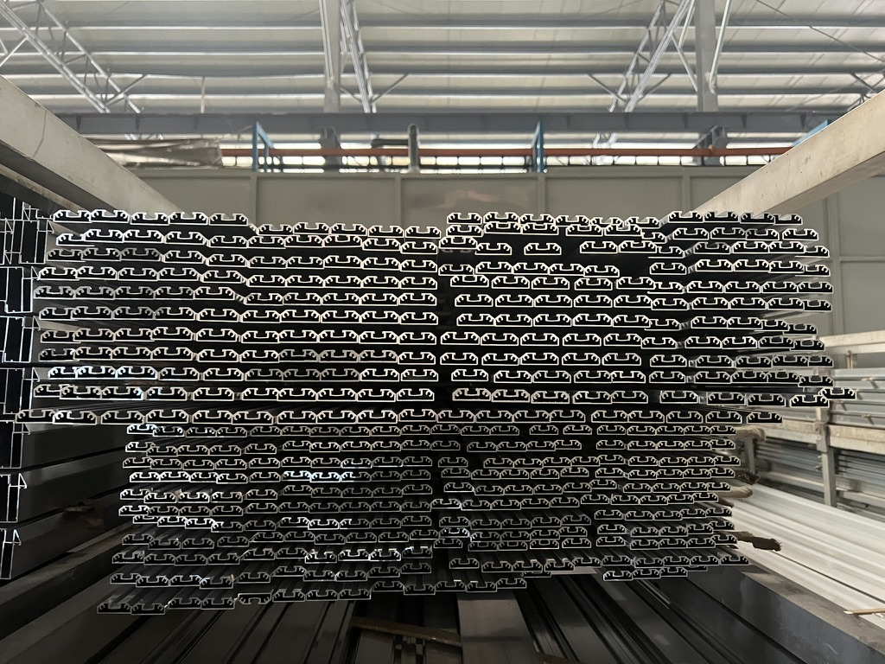

Aluminum profiles seen during a Taotao business visit. The photo illustrates the material form; it does not identify a supplier, alloy, batch or order.
Hypothetical buyer situation: A window-system importer approves a profile sample and a drawing. Weeks later, production bundles are ready and the seller asks for the balance. The buyer's question is no longer whether the sample looked right. It is whether the specific extrusion lot being shipped matches the agreed section, alloy and temper.
Why this decision matters
ASTM's B221 scope covers specified aluminum and aluminum-alloy extruded bars, rods, wire, profiles and tubes. The Aluminum Association's ANSI H35.1/H35.1M page explains the alloy and temper designation system. Those references help decode an order that calls for a specific standard and designation; they do not establish the composition or properties of a particular bundle. The buyer must first confirm whether the quoted standard and edition actually apply to this product and destination.
Taotao's lot-to-bundle evidence map
| Request | Match against | Decision question |
|---|---|---|
| Approved section drawing and revision | Purchase order and retained sample | Is the cross-section and finish requirement still the one ordered? |
| Mill or test certificate with alloy, temper, results and lot/heat identifier | Agreed standard/edition and order specification | Does the document address the material and checks you actually bought? |
| Bundle labels and packing list showing count, length and lot reference | Certificate lot identifier and shipment allocation | Can each shipment bundle be traced to the reported material? |
| Change record for extrusion source, die, heat treatment or finishing | Approved sample and order revision | Was any material or process change approved before release? |
How to verify it
Ask for legible, dated photographs of several representative bundle labels together with the corresponding packing list and certificate. Record the drawing number, alloy/temper, lot identifier and bundle count in one row per shipment lot. Check the certificate issuer and test scope against the purchase order. If a critical property matters for the intended use, agree a representative sampling and independent test plan with a qualified laboratory; a photograph of stacked profiles cannot establish material composition or performance. A factory visit can observe label and inventory controls, but it does not replace testing.
Red flags and limitations
Pause if the certificate lacks a lot identifier, reports a different temper, uses an unexplained standard edition, or cannot be connected to the bundles on the packing list. Do not assume a certificate for an earlier sample covers later production. A mill document and a visual check each answer different questions, and neither by itself confirms all finished-window requirements.
Continue / Pause / Escalate
- Continue: the approved drawing, order, certificate, lot labels and packed quantity reconcile, with agreed checks completed.
- Pause: a lot or bundle link is missing, or the alloy/temper or drawing revision differs.
- Escalate: inconsistent results or an uncertain standard scope to a qualified laboratory or materials engineer before releasing the balance.
See Taotao Trading's doors and windows sourcing range. One next step: send a redacted profile specification and lot certificate for a document-gap check. Remove customer names, private prices and sensitive drawings first.